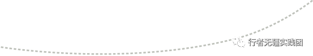
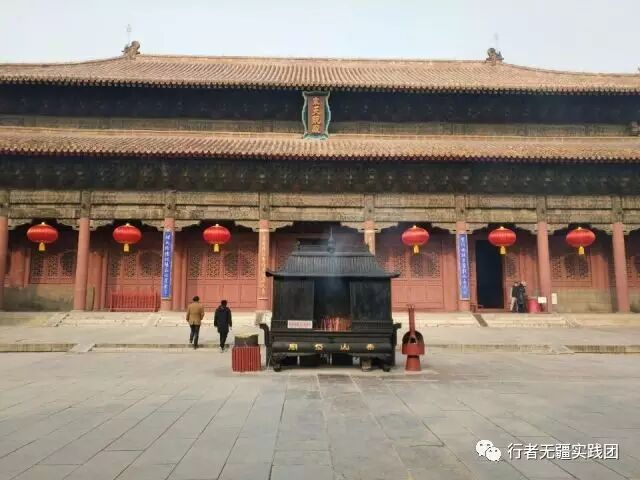
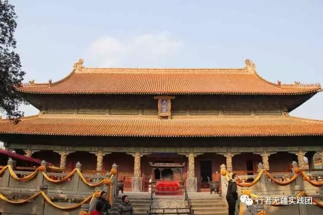
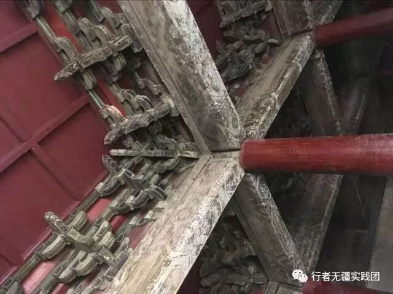
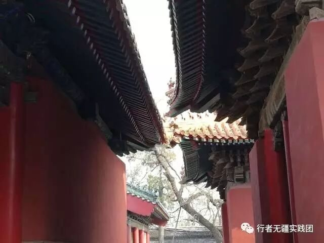
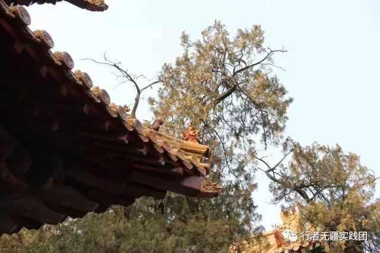

来自行者的第四封信|凝固的艺术——古建筑
凝固的艺术——古建筑

文：王新航
打小喜欢建筑。
其实对建筑一窍不通，也不知道建筑啥样是个好，啥样是不好，只是每当看到自己喜欢的建筑，仍会驻足观看，留恋之际，仰望至蓝天云际，忽感到自己徜徉于历史长河中，追忆每一个发生在这里的故事，然后感慨世事沧桑，天地轮回，心中的敬畏之感油然而生。

此次山东之行，有幸到了“东方三大殿”中的岱庙天贶殿，孔庙大成殿，站在气势磅礴的大殿旁，忽然觉得自己是多么的渺小，这也或许是当初设计者的匠心，文化凌驾于众人之上，使人不得不产生对泰山，对儒家文化的敬畏之情。
抚摸着大殿中巨大的金丝楠木立柱，再一次赞叹古代劳动人民的汗水与智慧，要将这些木材从西南山区运到山东，需要跨越千山万水，据导游讲，大成殿中的木材从四川经长江，京杭运河运到漕运发达的济宁，然后每隔一里凿一口井，在冬季取水撒到驿道上，待其成冰后再将圆木滚到曲阜，在交通极不发达的古代，其工作量可想而知。


大殿中最吸引我的便是古建筑中的榫接构造。榫接是我国传统建筑中常用的技巧，是先民智慧的结晶，运用得当整个结构体可以结合的相当牢固，不需一针一钉。全部由榫接构造成的大殿历经历史的风霜洗礼，如今仍巍巍伫立在齐鲁大地之上，昭显着我国古代劳动人民的智慧。

建筑的美在于它的永恒，我们会因为一个建筑的存在，而不断体会它带来的社会的历史，以历史的进程感受它的变化与进程，作为一个“人”的存，静静地感受着一个活化的物体，经历人类社会变迁的原始。
在此次调研中，去过许多古迹，见到了以前只有在教科书中才会出现的“钩心斗角”构造，藻井，斗拱，单拱结构，领略了气势恢宏，规格至高孔庙，走过了鸟语花香的老舍故居，看过了大气磅礴的千佛山大佛，收获颇丰，感触良多。


五天的行程，走过了十多处古迹，收获挺多，但更多的，是痛心，痛心中华文化的结晶没有得到得当的保护和游客素质的低下。承载着齐鲁文化的古迹，逃得过天灾，却逃不过人祸。或许是缺乏资金，古建筑中没有得到很好的保护与修缮，在孔庙中一些建筑的漆面脱落严重，早已失去当年的色彩，许多壁画已经严重模糊却得不到修复。
“XXX到此一游”的字样在每处景点都随处可见，印象最深的一处是岱庙的铜亭，这本是比较偏僻的一处景点，却也满满的刻满了文字，况且在铜上刻字的难度要远大于城墙上，可见游客所下的“功夫”之深。每当看到这些心中总隐隐作痛，为这些古迹叹息，又想到自己却无能为力而感到深深地无奈。
我想，文明可能产生于野蛮，但绝不喜欢野蛮，这些承载着中华文化的建筑已经经不起再多的糟蹋了！